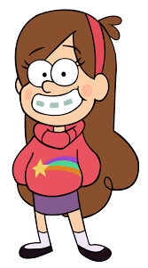
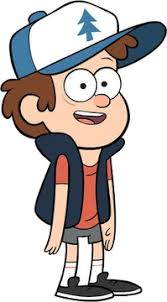
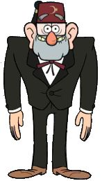
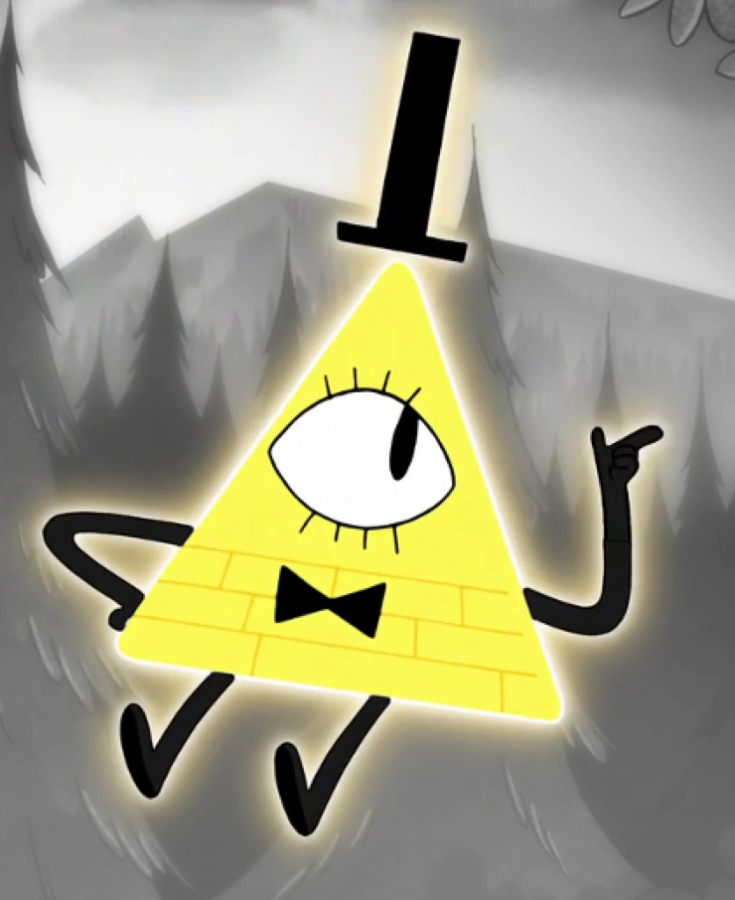
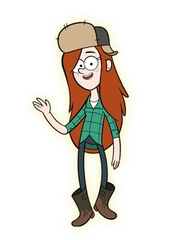
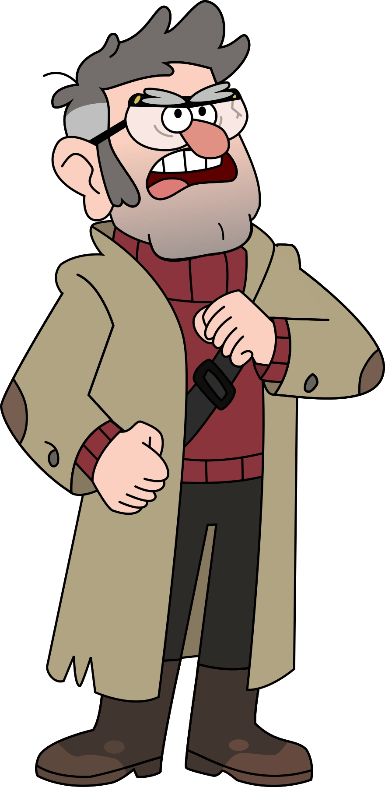
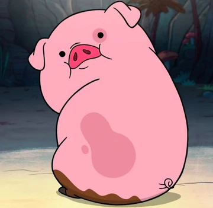

Mabel
Mabel Pines é uma das protagonistas de Gravity Falls. Com 13 anos, é a irmã gêmea de Dipper. Energética e otimista, destaca-se por sua personalidade contagiante, adoração por suéteres coloridos e por resolver mistérios

Mabel Pines é uma das protagonistas de Gravity Falls. Com 13 anos, é a irmã gêmea de Dipper. Energética e otimista, destaca-se por sua personalidade contagiante, adoração por suéteres coloridos e por resolver mistérios

Dipper Pines é um garoto de 13 anos, inteligente, curioso e aventureiro. Junto com sua irmã gêmea Mabel, ele passa as férias de verão em Gravity Falls. Armado com um diário misterioso, Dipper passa seus dias investigando os fenômenos sobrenaturais e os segredos ocultos da cidade.

Stan Pines, também conhecido como Tivô Stan, é o rabugento e carismático dono da Cabana do Mistério em Gravity Falls. Ele passa o verão cuidando dos sobrinhos-netos Dipper e Mabel, escondendo um passado misterioso e criminoso para proteger sua família

Bill Cipher é o principal antagonista de Gravity Falls. Ele é um poderoso demônio dos sonhos interdimensional, representado como um triângulo amarelo com um único olho, cartola e gravata. Manipulador e caótico, seu maior objetivo é escapar para a nossa dimensão e dominar o universo com o Estranhageddon

Wendy Blerble Corduroy é uma adolescente de 15 anos, descontraída e rebelde, que trabalha meio período na Cabana do Mistério. Filha de um lenhador, ela possui habilidades excepcionais de sobrevivência e representa o "saco de gelo" no Zodíaco de Bill Cipher devido à sua postura calma em situações de perigo

Soos Alzamirano Ramírez é o adorável e ingênuo faz tudo (e eventual proprietário) da Cabana do Mistério. Ele é um dos melhores amigos e parceiros de aventura de Dipper e Mabel, servindo como o coração cômico e leal da série.

Stanford Ford Pines é o autor dos três diários místicos e irmão gêmeo idêntico de Stan. Um gênio genial com seis dedos em cada mão, ele dedicou sua vida a investigar os segredos de Gravity Falls, Oregon. Ele construiu o portal interdimensional com Bill Cipher, mas, ao descobrir a verdadeira intenção maligna do demônio, escondeu os diários e desapareceu por 30 anos.

Waddles (conhecido como Ginga em algumas dublagens) é o adorável porco de estimação de Mabel Pines. Ela o ganhou na Feira do Mistério ao adivinhar exatamente o seu peso, que era de 8 kg. Ele é conhecido por seu pelo rosado, manchinhas e sua inteligência surpreendente.